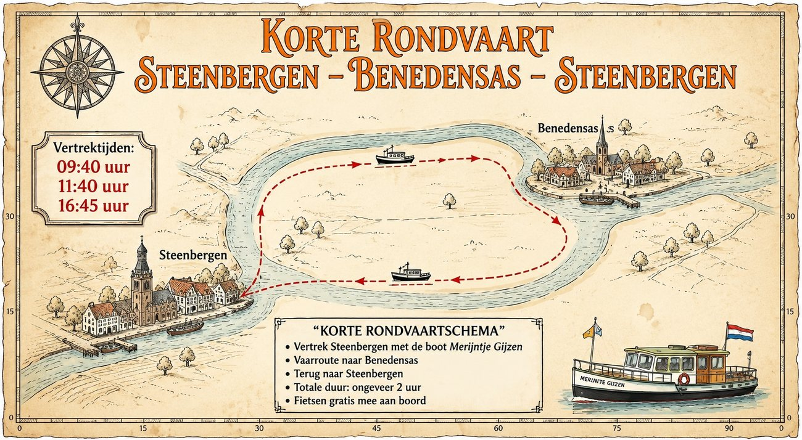
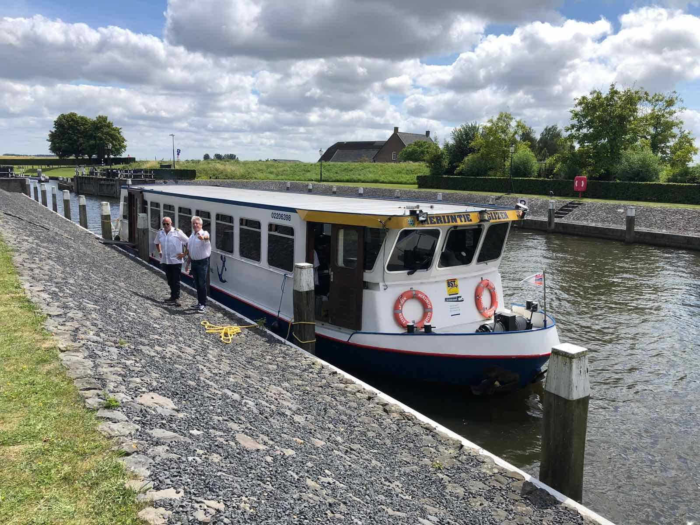
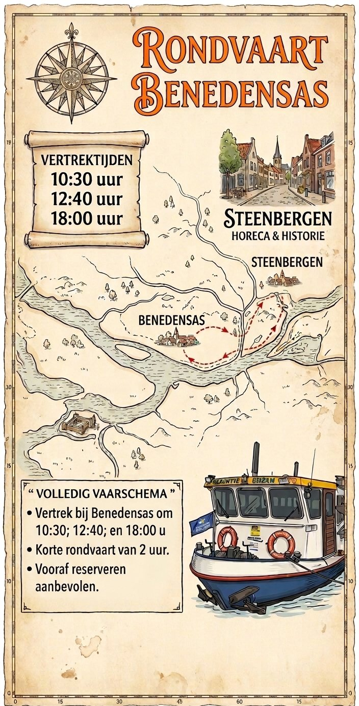
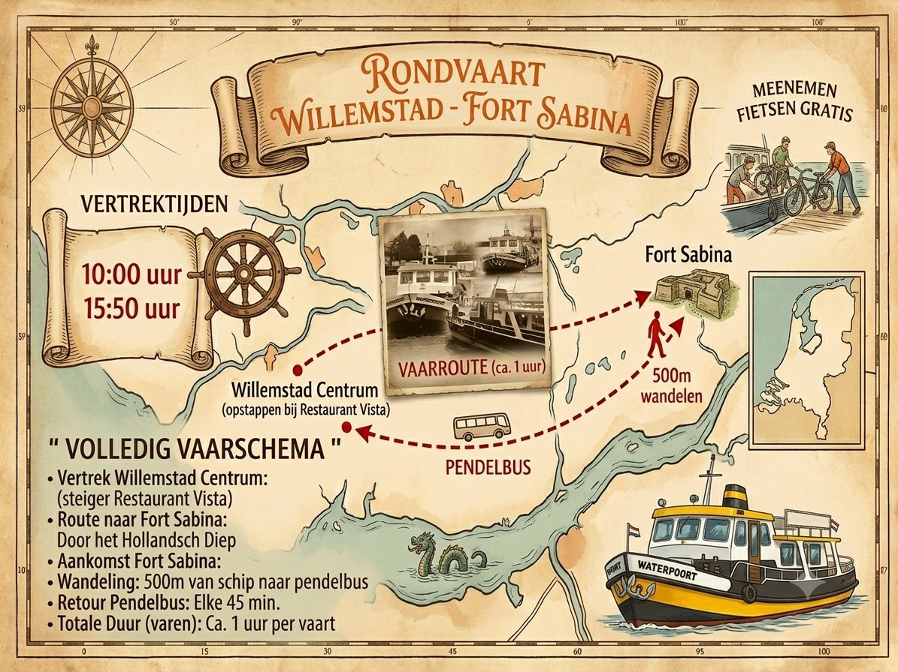
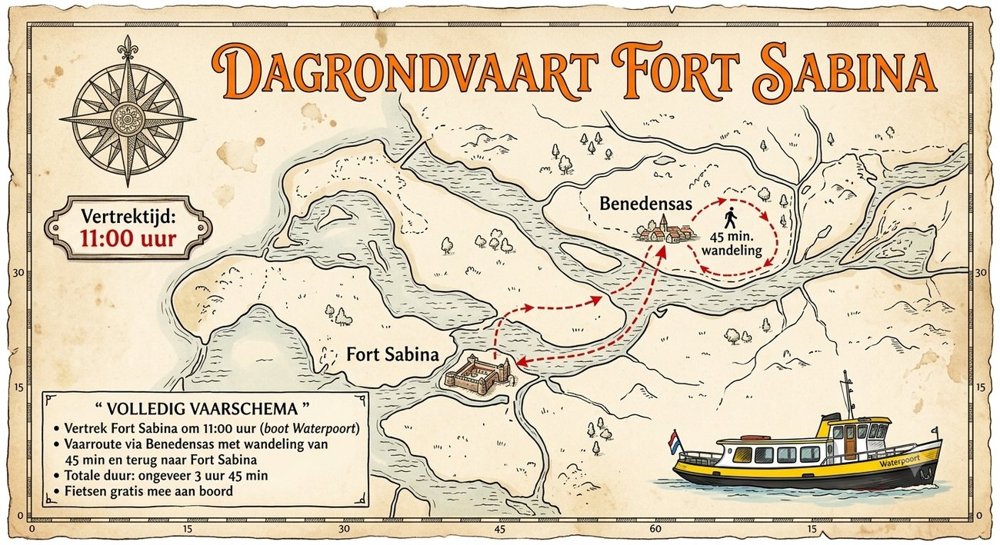
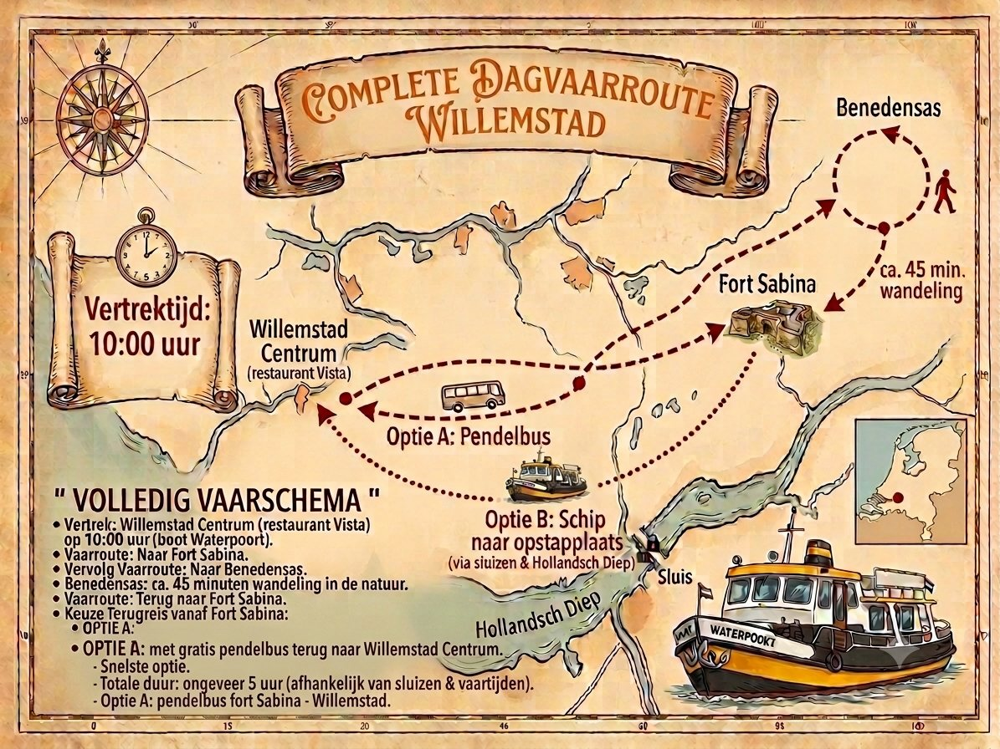
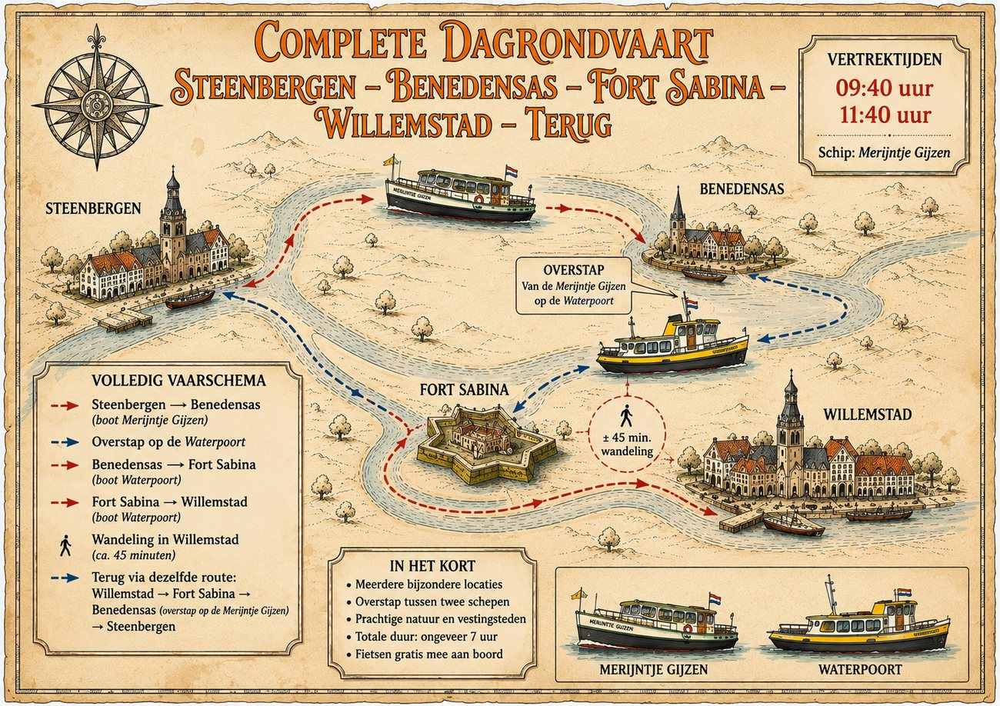
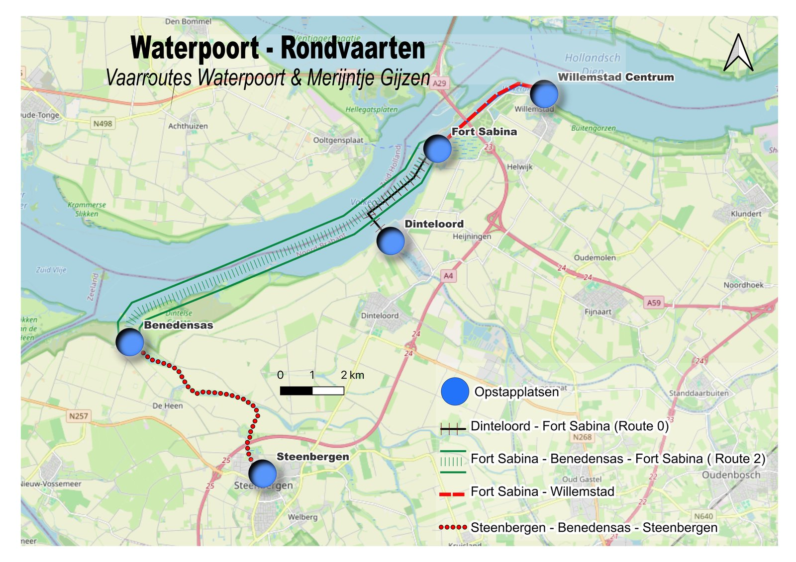

Korte rondvaart Steenbergen – Benedensas
- Vertrek Steenbergen met de boot Merijntje Gijzen
- Vaarroute naar Benedensas en terug naar Steenbergen
- Fietsen gratis mee aan boord

Vaar langs vestingsteden, historische forten, rustige kreken en natuurgebieden. Van een uur varen tot een hele dag op het water.
We varen met twee boten: de Waterpoort en de Merijntje Gijzen. Vooraf reserveren wordt aanbevolen.






De routes verbinden vijf opstapplaatsen in de Brabantse Waterpoort. Op de kaart ziet u welke route waar vaart.

Geef door welke route en datum u in gedachten heeft, dan hoort u snel van ons. Liever direct contact? Stuur een WhatsApp-bericht.
Voor reserveringen, groepen of een vraag over de vaarroutes.